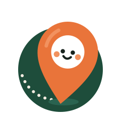

Selos no site
Onde as figurinhas entram na interface. Tudo aqui é HTML e CSS de verdade, pronto para copiar. As figurinhas estão em marca/v2/figurinhas/.
Me Surpreenda
O botão vira um adesivo: borda branca, leve inclinação e o dado saindo pela esquerda. Ao passar o mouse ele endireita e o dado gira.
Categorias
Nos filtros do Explorar e nas etiquetas dos cartões.
Lugar sem foto
A capa ilustrada ganha a figurinha da categoria no canto, cortada pela borda.
A foto foi buscar pastel.
A foto está esperando o café passar.
A foto ainda está na pista.
Marcadores do mapa
Em zoom aberto, o ícone de traço. Ao aproximar ou selecionar, a figurinha.

Telas vazias e avisos
Nada salvo aindaToque no coração de um Lugar e ele aparece aqui.